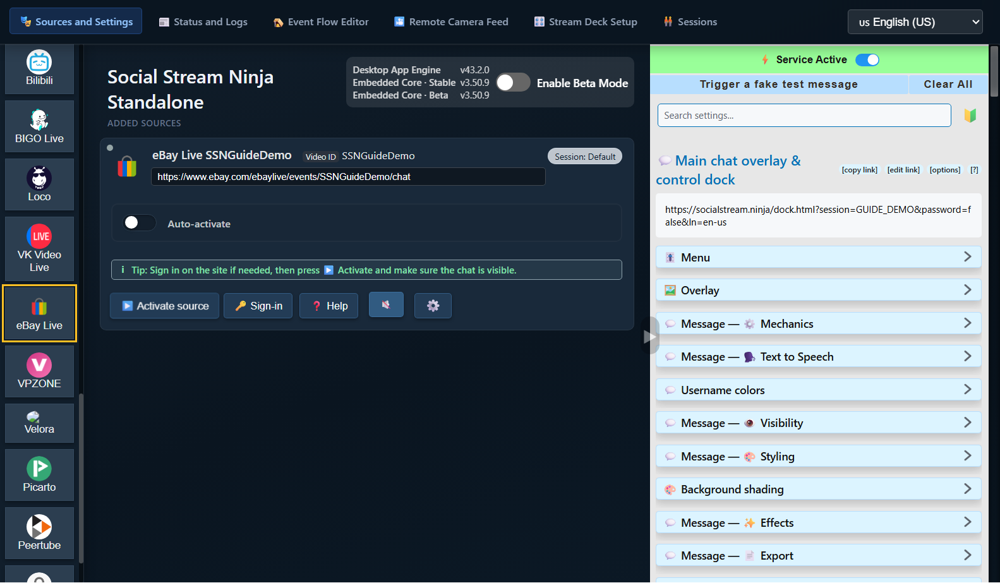
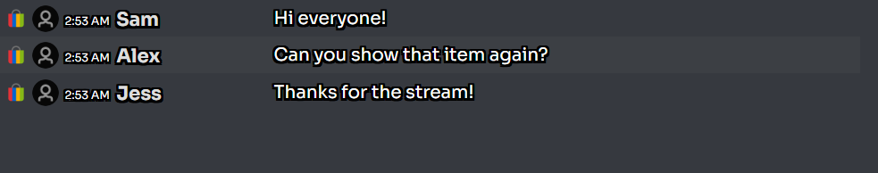
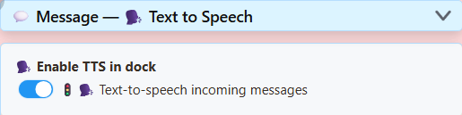
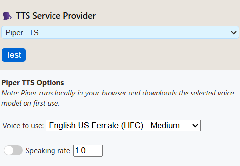
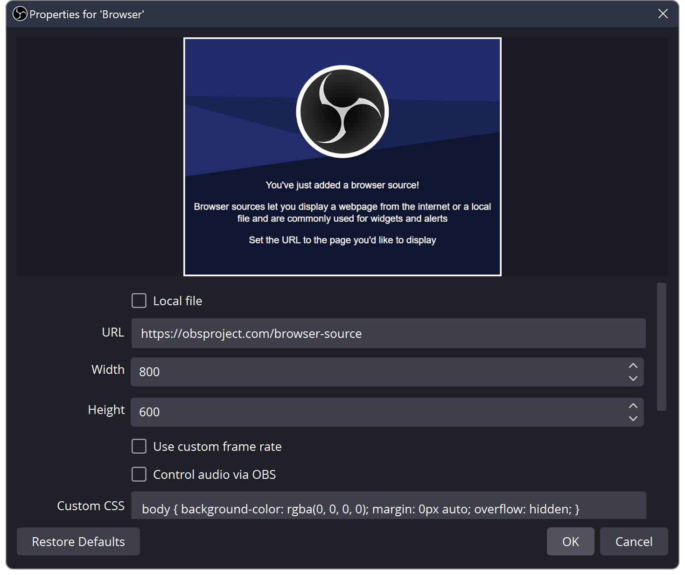

Source = the chat you capture. Dock = the SSN window showing those messages. OBS = where you put them on your stream.
Choose one way to run SSN. You do not need both.
1. Open SSN and turn it on
Download the desktop app for your computer, install it, then open Social Stream Ninja.
Go to Sources and Settings. If the right panel says Service Disabled, click it once. It should say Service Active.
Install Social Stream Ninja from the Chrome Web Store in Chrome or Edge.
Click your browser’s Extensions (puzzle-piece) button, then Social Stream Ninja. Pin it for next time.
If the popup says Extension Disabled, click it once. It should say Extension active.

The desktop app will not open?
Follow the Windows, macOS or Linux opening instructions. Installing SSN does not automatically connect a chat.
2. Add the chat you want to read
In Sources and Settings, choose your platform from the buttons on the left. Scroll that list if needed.
eBay Live example: click eBay Live, paste the link to your live event, then click Continue.

Your new source appears under Added Sources. Click Activate source. If the site asks you to sign in, use Sign-in, then activate the source again.

Where are those controls?
{kind=link}

In the same browser that has the extension, open the live stream’s chat page. Sign in to the platform if needed, and keep that tab open.
eBay Live example: open your live event on eBay and make sure its chat is visible. A product listing or seller’s shop page is not the live chat.
You do not add a source row in SSN for this method: the extension captures supported chat pages you open.
Check: you can see new messages appearing on the original platform’s chat page.
Using another platform?
Use that platform’s live chat or pop-out chat link. Find the setup steps for your platform.
3. Open your SSN dock
Return to SSN’s settings on the right of the appby clicking its browser extension icon. Find Main chat overlay & control dock.
Click the long link underneath that heading. It opens your chat dock. Use copy link when you need to paste it somewhere else.

Ask someone to send a new chat message, or send one yourself on the original platform. It should appear in the SSN dock.
{kind=link}

Chat appears here? You are connected. Get this working before changing TTS or OBS settings.
My dock is empty
Check SSN is active, the source is running and its chat is visible. Send a new message; old messages may not be replayed. Open the dock link from this same SSN app/extension, not a screenshot or another session.
If needed, use Trigger a fake test message in SSN settings. If that appears but real chat does not, investigate the source. If neither appears, check the dock link and connection.
4. Optional: read chat aloud
Yes—TTS can read incoming chat automatically, one message at a time. eBay does not need its own TTS feature. SSN must already be receiving the text.
Back in SSN settings, below your main dock link, expand Message — Text to Speech. Turn on Enable TTS in dock:
{kind=link}

Scroll down in that section. Choose Piper TTS under TTS Service Provider, then select a voice. No API key or paid account is needed.
{kind=link}

Copy your main dock link again. The updated link includes TTS. An older copied link does not gain the new settings.
I only want to hear it on my computer
Open the updated dock link and send a new chat message. Click inside the page if your browser blocks audio. You can stop here if you do not need OBS.
5. Add your dock to OBS
- In your OBS scene, find Sources. Click + → Browser. Name it SSN Chat, then click OK.
- Replace the default URL with the dock link you just copied. Leave Local file unchecked.
- For TTS, check Control audio via OBS. Click OK.
{kind=link}

Drag the chat box in the OBS preview to move it. Drag a corner to resize it. If you already added this source, open its Properties and replace the old URL instead.
I want the voice without showing chat
Keep the Browser Source enabled, but place it behind an opaque camera/game source, or move it off the canvas. Do not switch off its eye icon or unload it while relying on its audio.
What about an OBS Custom Browser Dock?
That is a control panel for you. It is different from the scene Browser Source above. Start with the Browser Source for captured TTS audio. More about docks and overlays.
6. Check the sound before going live
- Send another chat message. Look for movement on SSN Chat in OBS’s Audio Mixer.
- To hear it yourself, open Edit → Advanced Audio Properties. Set that source to Monitor and Output.
- Make a short OBS recording and play it back. You should hear the message once.
Chat visible + voice in the recording = ready. Your live broadcast must use OBS’s audio for viewers to hear it; SSN does not automatically add sound to a separate phone broadcast.
Silent, or hearing it twice?
No meter movement: check the new URL, TTS switch, voice download and Control audio via OBS. Start with Piper rather than System TTS in OBS.
Meter moves but recording is silent: check mute and recording-track assignments.
Hearing it twice: close the extra speaking dock/browser, or disable its TTS. Avoid recording both the OBS source and a second copy of its monitored sound.
Compare voices and troubleshoot TTS · OBS source help · OBS audio help
Next time you stream
Open SSN, activate your source (or open the chat tab), and open OBS. If eBay gives the next stream a new event link, update the source to that event. Keep using the dock link from the same SSN session.
More advanced options
Other voice providers · Run your own TTS server · All guides